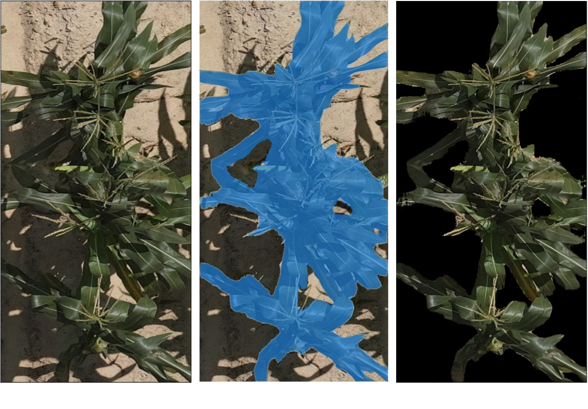

Deep Learning for Disease Resistance Classification using Drone Imagery of Corn
Project Overview
Corn breeders currently rely on slow, subjective visual scoring to assess foliage disease resistance across
thousands of plots. This project reframes disease assessment as a supervised regression task: training a deep
neural network to predict Southern Leaf Blight (SLB) severity directly from drone-collected RGB images. The
challenge lies in designing a system that generalizes across seasons and field conditions while managing large,
noisy, and imbalanced real-world data.
Data

The dataset is composed of approximately 10,000 images of the plants and associated foliage health scores
on a scale of 1 (highly diseased) to 9 (no disease) with 0.5 size increments. Disease severity scores were
collected by PhD students and researchers in plant pathology over two years.
Numerous CNN models were trained and tested to evaluate custom model architectures as well as off the
shelf model implementations including EfficientNetv2 and ResNet. Custom models were implemented in PyTorch
and using Optuna and MLFlow we were able to train and test numerous variations of convolutional and fully
connected layers, adjusting both the depth and width of the models. Initial training struggled to learn the
data effectively with accuracy remaining below 40%. Deeper evaluation of the images used for training led us
to suspect that the models were having difficulty identifying and focusing on appropriate corn foliage and
disease features and were not able to filter out and ignore the other non-relevant features in the images like
non-corn vegetation, soil and shadows.

To augment our training images, we decided to segment the images to filter out the non-relevant features and
allow the models train on images that were segmented and filtered to focus on the corn foliage using
Facebook's Segment Anything Model 2. These images show an example of the original image, image mask and
filtered image transition used to augment the training images.
Model Implementation
Using image masking and filtered images for training and testing significantly improved the ability of our
models to effectively learn the data, raising early accuracy scores above 80%. Model training and evaluation
is still underway with a focus optimizing our custom model implementation to find an optimal blend of
convolutional and fully connected layer depth and widths.

Model performance metrics will be added here in early September 2025...
Tech Stack
Provide details of MLFlow, Optuna, Python implemented custom CNN